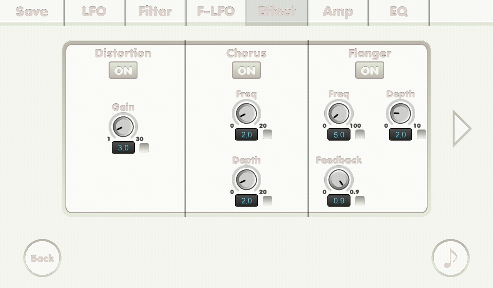

{% include JB/setup %}
Effect screen(1)

- ON button: to turn the effect on.
- Gain knob: gain.
- Frequency knob: frequency.
- Depth knob: depth.
- Feedback knob: feedback.
- Check boxes: if it was checked its related number is affected by mutate feature.
- Swipe horizontally to go to another page.